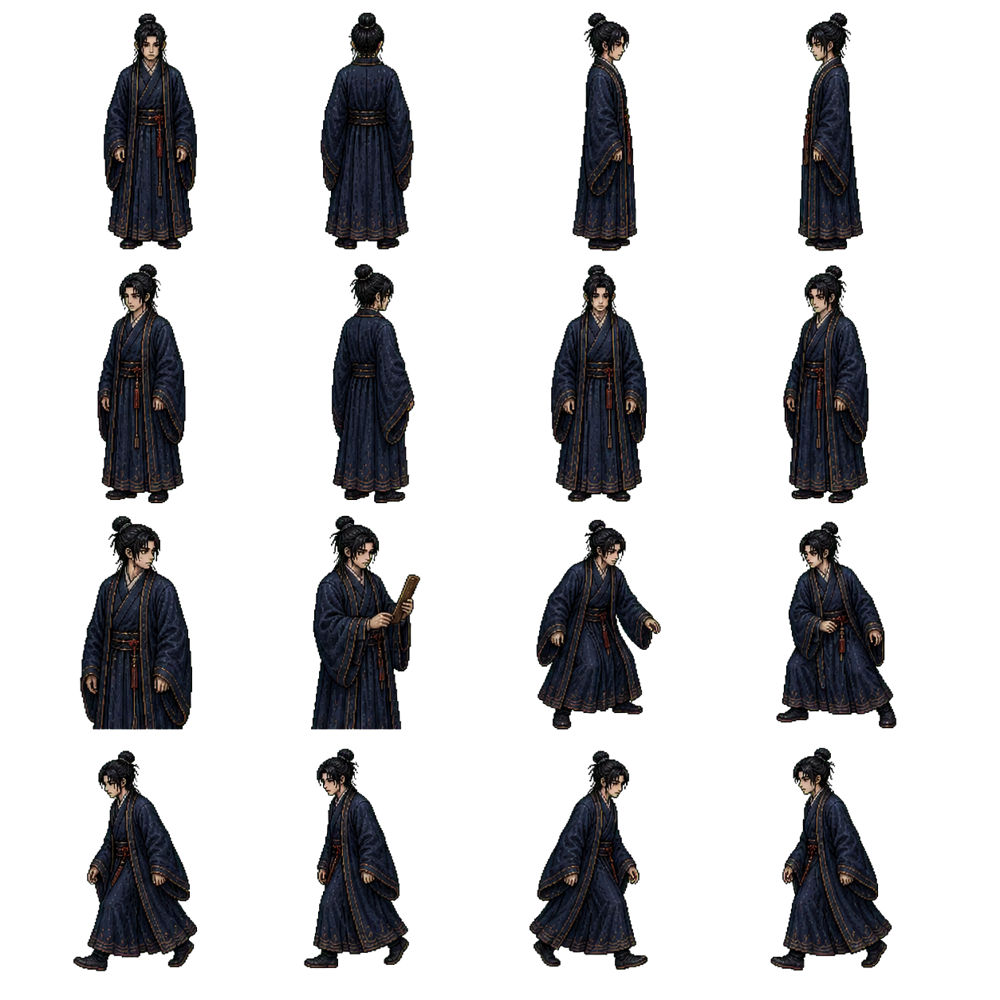

MoonSpace 美术资源审查
月之隙 / 角色精灵与对话头像

player-envoy-large.png · CG 对齐正式运行资源 / 已接入
4x4 帧表
168x248px
16帧 4方向
旧 16×24 小精灵已清理；缺图时使用程序化回退。
玩家
凌霄宫使者伪装者
玩家是误入月宫的现代人，伪装成凌霄宫使者。当前大精灵已统一为年轻清瘦、无胡须、黑发髻、深靛交领长袍的 CG 对齐身份；旧 16×24 小图已清理，不作为正式视觉基准。
大版 42x62/帧 · 程序化缺图回退

主角重制母版 · CG 对齐 / 已接入
年轻清瘦 / 无冠帽无胡须 / 黑发髻 / 深靛交领长袍
这是 imagegen 去绿幕后保留真实 Alpha 的身份母版；用户已确认接入。正式运行表已按 42×62/帧制作并在庭院、广寒宫内殿的 480×270 与 960×540 真实绘制路径复核，不改变现有站位、碰撞盒或剧情。
1254×1254 RGBA
4×4 动作/转身
已批准 / 已接入
详见：B01 中文接入基准板 · 庭院 960×540 · 内殿 960×540
{kind=link}
{kind=link}
{kind=link}

wugang-chop-large.png
4x4 帧表
304x368px

wugang-dialog.png
吴刚小精灵已清理；运行时主路径使用大尺寸帧表，缺图时回退到程序绘制。
吴刚
永恒伐桂者
被困在循环中的神话囚徒。上身宽、下身稳、动作僵硬。灰白肤色、不对称肌肉纹理。斧刃月白高光。
大版 76x92/帧 · 小图已清理

yutu-pounding-large.png
4x4 帧表
256x312px

yutu-dialog.png
玉兔小精灵已清理；缺图时使用程序化本体回退，杵保持透明覆盖层。
玉兔
蹲伏的类人生物
不应画成可爱的兔子，而是"被称为玉兔的东西"。苍白、灰白、1-2像素红眼、异常关节、长耳。
大版 64x78/帧 · 透明本体 + 杵覆盖层

chang_e_16frames_transparent.png（运行时）
16帧
RGBA / Alpha

chang-e-dialog.png
对话头像
嫦娥
广寒宫中的透明 16 帧角色
当前运行时使用透明版 16 帧并缩放至 128×128。旧版 chang_e_16frames.png（RGB 绿幕，STALE） 仅用于历史问题追踪，不得进入正式画面。